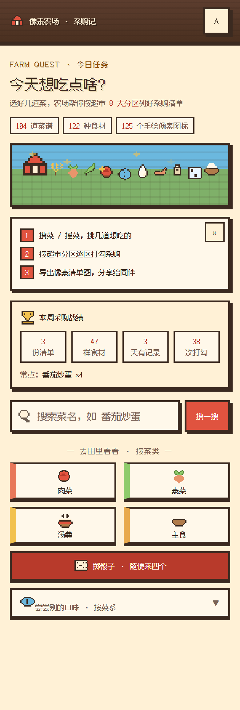
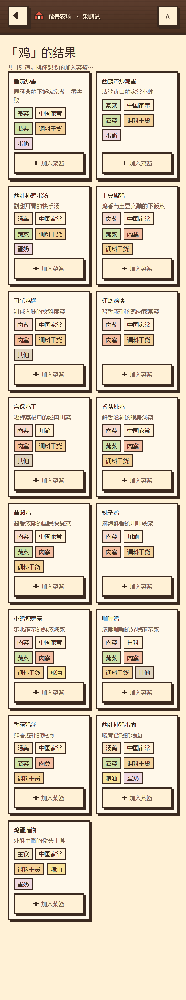
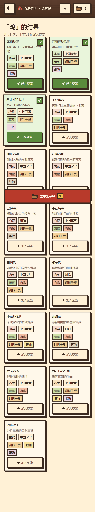
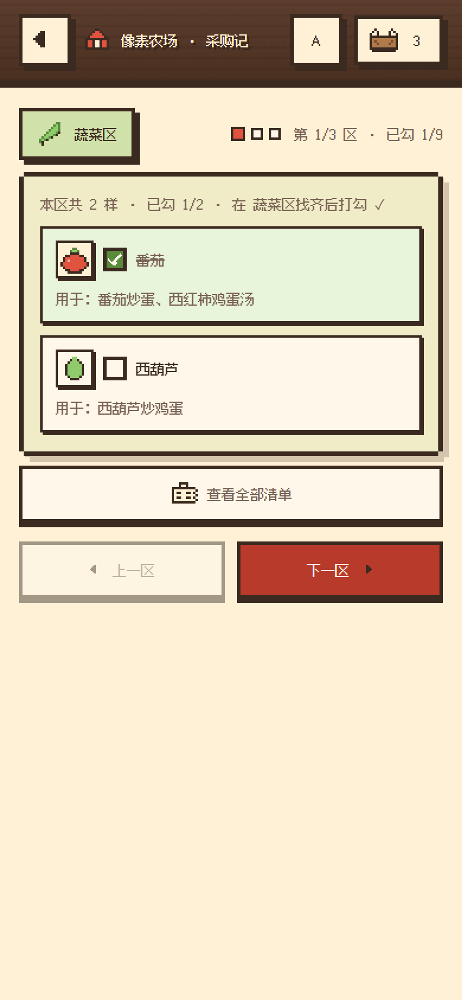
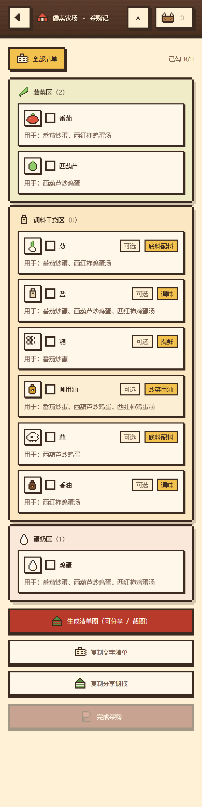
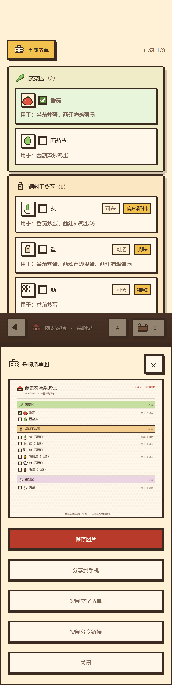
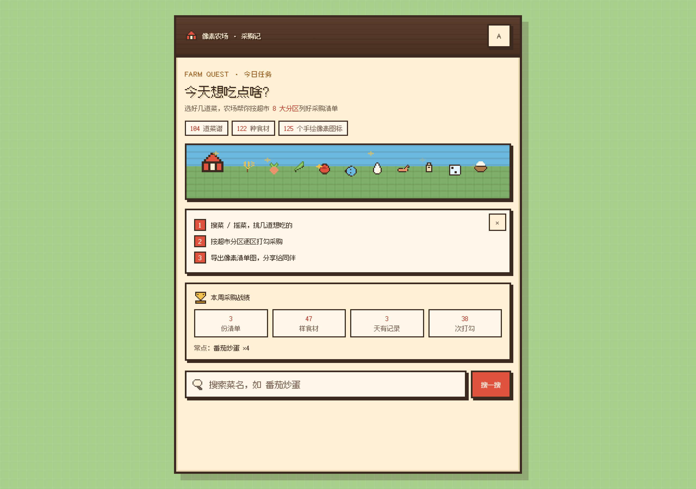
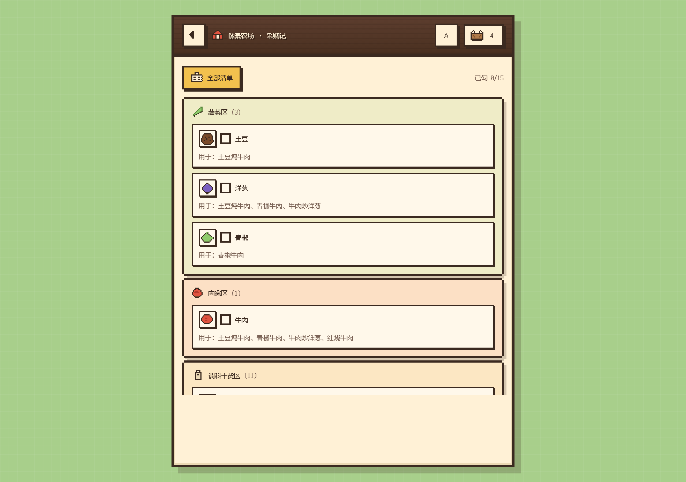

FARM QUEST · 今日任务
今天想吃点啥？
去超市该买什么，一道菜一道菜地接任务
一个 16-bit 农场游戏风的超市采购助手：选几道想吃的菜，它按 8 大超市分区列好采购清单， 逐区闯关打勾，通关后导出像素风清单图分享给同伴。104 道家常菜、122 种食材、 125 个手绘像素图标，全部跑在一个零依赖的静态网页里。
104 道菜谱
8 大超市分区
122 种食材图标
125 个手绘像素图标
0 运行时依赖
界面实录








为什么是它
把采购变成一场农场冒险
搜索/掷骰子选菜 = 接任务；按超市分区逐区打勾 = 闯关；导出清单图 = 通关晒图。菜篮、关卡、战绩全是游戏化语言。
125 个手绘像素图标
自研 ASCII 图标引擎：12×12 字符网格 → 运行时合并生成 crispEdges SVG。每种食材有专属小图标，成品菜预览保持纯文字，职责分明。
贴着真实超市动线设计
清单按 8 大分区（蔬菜/肉禽/水产/调料干货/冷冻/粮油/蛋奶/其他）聚合，同名食材合并、同义写法归一（土豆片=土豆），备注去重合并，一路少走回头路。
零依赖，离线也能用
没有框架、没有后端、没有构建步骤。Service Worker 缓存 + 单文件离线版（字体子集内联，file:// 双击即用，网络请求为 0）。
无障碍与稳健性
全键盘可操作（button + role=checkbox + 焦点陷阱）、对比度 ≥4.5:1、脏 localStorage 防御、多标签菜篮同步、canvas 导出三重降级。
像素清单图一键分享
通关后 canvas 实时生成像素风清单图（分区色条 + 像素勾选框），可保存到手机、分享到微信，也可复制文字清单或带菜篮的分享链接。
技术一览
| 形态 | 纯静态站点：HTML + CSS + vanilla JS（一个 IIFE，约 9.9k 行），无框架 / 无后端 / 无构建 |
|---|---|
| 图标引擎 | 12×12 ASCII 网格 → 横向合并 rect → crispEdges SVG；Node 可 ASCII 预览 + 行宽校验 |
| 数据 | 104 道菜 / 8 分区 / 122 种食材 / 739 条关联；启动时 type·cuisine 推导 + 复合调料名拆解 + 同义归一 |
| 状态 | localStorage（脏值防御 + 写失败降级）+ storage 事件多标签同步 + 深链 #m=id,id 还原菜篮 |
| 离线 | Service Worker（cache-first）+ 单文件构建器（按字符集精选 26/78 个字体子集内联，1.0MB） |
| 测试 | 3 套 Playwright 行为回归（24+20+15 项，均断言 0 pageerror / 0 console error）+ 4 个 Node 校验脚本 |